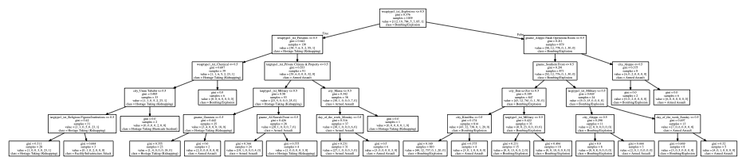

Analyzing Impact of Military State Interventions on Terrorism and thereby Predicting Attack Type
(with references and footnotes)Executive Summary
Understanding the impact of military interventions on terrorism is a crucial inquiry, encompassing various dimensions of security: personal, social, and financial. Given its significance, it is imperative to conduct a quantitative analysis of how military interventions influence extremist activities. This analysis holds particular relevance in decision-making processes regarding whether to engage in military interventions and evaluating the legality and effectiveness of ongoing operations under international law. Moreover, it facilitates accountability for military actions, ensuring adherence to international legal frameworks.
Additionally, this paper introduces a predictive model designed to classify attack types, offering a proactive approach to counterterrorism efforts. By leveraging available intelligence on specific parameters, such as those observed in Syria, where our research identified a statistically significant impact of US-led intervention, this model enables preemptive measures to thwart potential terrorist attacks. Anticipating the type of attack before it occurs enhances preventive strategies and mitigates security risks effectively.
In our examination, we identified only two interventions—by the United States in Syria in September 2014 and by the Russian Federation in the autonomous regions of South Ossetia and Abkhazia of Georgia in August 2008—that exhibited statistically significant correlations with terrorist activity levels in their respective regions. These interventions and their ramifications are extensively discussed in this report. Furthermore, recognizing the escalating terrorist activities post-intervention in Syria, I developed a predictive model tailored to forecast terrorist activity in the region, underscoring the critical need for proactive counterterrorism measures by the United States and their allies.
Background
Over the past two decades, global military interventions have surged, often justified by the need to support failing states or address humanitarian crises. This project focuses on analyzing military interventions by two key players, the United States of America and the Russian Federation, and their impact on terrorism. While the definition of terrorism lacks universal consensus, for this study, the definition provided by the National Consortium for the Study of Terrorism and Responses to Terrorism (START) at the University of Maryland will be utilized, leveraging their comprehensive data. Additionally, the project aims to offer a comparative analysis of interventions undertaken by these two nations.
Moreover, the project endeavors to forecast attack types based on various parameters such as city, target type, perpetrating group, and day of the week. However, before delving into the specifics of this predictive model, it's vital to contextualize the significance of this research. Reports from Reuters in April 2019 revealed a record high in global military expenditures since the end of the Cold War, with the United States leading the pack and Russia ranking among the top ten spenders. Furthermore, amidst discussions spurred by President Donald Trump's proposal in January 2020 for increased NATO involvement in the Middle East, articulated in an opinion piece by John R. Deni in The Washington Post, there arises a pertinent question: Do military interventions effectively counter terrorism? Given the ongoing conflicts in the Middle East and recent geopolitical developments such as the Trump administration's 'peace-to-prosperity' plan for the Israel-Palestine issue, this question assumes critical importance in policy formulation.
Examining the implications of past interventions is equally crucial, especially concerning accountability for actions deemed illegal under international law. For instance, the unilateral intervention in Iraq, contested by former UN Secretary-General Kofi Annan as illegal, underscores the necessity of evaluating the legal and ethical dimensions of military interventions. Partly addressing this inquiry, the paper seeks to ascertain the impact of military interventions on terrorist activities.
In the aftermath of interventions, recognized belligerents become subject to international law, necessitating interventionist countries to assist affected nations in combating these belligerents. Predicting attacks becomes paramount in such scenarios, as proactive measures can be taken based on available intelligence. The United States, alongside its NATO allies, and the Russian Federation have conducted numerous interventions, forming the focus of analysis in this paper. Specifically, the impacts of US interventions in Afghanistan and Iraq and Russian interventions in South Ossetia, Abkhazia, and Crimea will be examined, along with a comparative assessment of US-led and Russian interventions in Syria.
Recognizing the potential efficacy of predictive models in preempting attacks, a model will be presented to forecast attack types based on parameters outlined in the Global Terrorism Database codebook. Such predictive capabilities can aid in averting attacks by leveraging insights into terrorist group activities, target preferences, and weapon usage patterns.
Data Analysis Overview
The analysis primarily revolves around the Global Terrorism Database (GTD), a crucial dataset for measuring terrorist activities. Initially, the GTD data was cleaned and subsetted to focus on countries such as Syria, Iraq, Afghanistan, Georgia, and Crimea. This involved grouping the data by day and country to obtain a daily count of events in each respective country, forming the foundation for the analysis.
Further segmentation of the data was done to examine each country individually within specific time frames known as 'windows'. For instance, the time frames selected were 1996-2006 for Afghanistan, 1997-2008 for Iraq, 2009-2019 for Crimea, 2003-2014 for Georgia, and 2009-2019 for Syria. These windows facilitated a focused analysis within defined temporal boundaries.
Given the relatively low data points for Afghanistan and Georgia, additional data from the Georeferenced Event Dataset (GED) by the Uppsala Conflict Data Program was incorporated. Similar data cleaning procedures were applied to the GED data to ensure consistency across datasets.
The analysis also introduced a treatment variable denoted as 'invasion' in all datasets, indicating the timing of military interventions. Notable intervention dates include October 7, 2001, for Afghanistan (USA), March 19, 2003, for Iraq (USA), September 22, 2014, for Syria (USA), September 30, 2015, for Syria (Russia), August 27, 2014, for Crimea (Russia), and August 8, 2008, for Georgia (Russia).
The thorough data preparation undertaken lays the groundwork for an in-depth analysis
of the correlation between military interventions and terrorist activities across
the designated countries. The final dataset comprises the following number of
observations for each country:
• Syrian Arab Republic: 1,144 observations
• Republic of Iraq: 1,048 observations
• Ukraine: 585 observations
• Afghanistan: 339 observations
• Georgia: 71 observations
These observations serve as the cornerstone for subsequent analyses, providing a
robust foundation for examining the impact of military interventions on terrorism
within each respective country.
Data Analysis Approach
For constructing a classification model to predict attack types in the Syrian Arab Republic, meticulous data cleaning was conducted to eliminate unknown data points, ensuring the reliability of the dataset. The selection of the Syrian Arab Republic as the focus country is substantiated in the conclusion.
The dataset was structured with categorical dependent variables and features sourced from the Global Terrorism Database (GTD), encompassing parameters such as city, weapon type, target type, perpetrator group name, and day of the week. With a total of 1009 data points, the dataset provides a robust foundation for model development.
It's worth noting a known issue with the dataset regarding undercounting events from the 1900s, as highlighted by Staff (2014). However, given the study's focus on the past two decades and partial inclusion of late 1900s data, this limitation is deemed acceptable.
Figure 2 below illustrates the distribution and characteristics of the dataset, offering valuable insights into the variables under consideration.
Methodology Overview
Regression Discontinuity (RD) Analysis
The RD method is utilized for parametric analysis to assess the significance and effect of a policy or treatment. By observing a discontinuity or jump in the dependent variable at the treatment point, the impact of the treatment can be inferred. This technique is particularly useful for assessing the effect of military interventions on terrorist activities, assuming the interventions are random and not influenced by other factors. The treatment effect, labeled as 'invasion,' is analyzed in the subsequent summary tables.
Linear Regression
Ordinary Least Squares (OLS) regression is employed for inference and prediction. OLS aims to minimize the mean square error between observed and predicted values along a fitted line or curve. This method is suitable for part one of the project, focusing on regression discontinuity analysis, as it allows for the examination of the treatment effect without risking problems such as multicollinearity.
K-Nearest Neighbors (KNN) Classifier
KNN is a supervised non-parametric lazy machine learning algorithm used for classification. It determines the class of a data point by considering the majority class among its nearest neighbors. While simple and easy to implement, KNN may struggle with less observations, large numbers of features, and noisy or missing data.
Decision Tree Classifier
The decision tree classifier follows a tree-like structure where each branch represents a decision rule, ultimately leading to a classified label at the leaf node. Despite being easy to visualize and interpret, decision trees can be complex and prone to overfitting noisy data. However, they are robust to irrelevant features and missing data.
Advantages and Disadvantages of Models
KNN offers simplicity and ease of interpretation but may struggle with certain data characteristics, such as large feature sets and noisy data. Decision trees provide easy visualization and handle irrelevant features well but may be biased with imbalanced data and can overfit noisy datasets. Understanding the trade-offs between these methods is crucial for selecting the most suitable approach for the classification task at hand.
Analysis Overview
Parametric Analysis
The first phase of the analysis focused on determining the significance of military interventions using Regression Discontinuity (RD) models. RD models were applied to Afghanistan, Iraq, and Ukraine data to assess the impact of interventions, with the dependent variable being the number of terrorist events per day from the Global Terrorism Database (GTD).
For each country, the treatment effect of intervention, date normalized to zero, and an interaction variable between the normalized date and treatment effect were considered as independent variables. However, the interventions in Afghanistan, Iraq, and Ukraine did not exhibit statistically significant effects, as indicated in Tables 1, 2, and 3.
Distinct findings emerged for Georgia and Syria. In Georgia, the Russian intervention in the autonomous regions of South Ossetia and Abkhazia demonstrated a significant decrease in terrorist activities, suggesting a negative impact on terrorism (Table 4).
Conversely, in Syria, the United States intervention showed a statistically significant increase in terrorist activity, while the Russian intervention did not yield significant effects (Tables 5(a) and 5(b)).
The significant impact of interventions in Georgia and Syria underscores the importance of further capacity-building efforts by the state. Therefore, the development of a prediction model to anticipate attacks becomes imperative, given the observed effects of interventions on terrorist activities.
Non-Parametric Analysis
For the non-parametric aspect of the project, the analysis focused on classifying attack types using K-nearest neighbors (KNN) and decision tree classifiers.
K-nearest neighbors (KNN) algorithm was initially employed due to its simplicity. However, it yielded poor results with an accuracy of only 2.63% using 10-fold cross-validation, likely due to the high dimensionality of the feature matrix, which consisted of 379 dummy variables representing different cities, weapon types, target types, and perpetrator groups in Syria.
Given the unsatisfactory performance of KNN and concerns about the distribution of the outcome variable (attack type), the decision was made not to employ the Random Forest Classifier. Instead, a decision tree classifier was chosen for its interpretability and ease of visualization.
The decision tree classifier was trained on the entire dataset, with a maximum depth determined through evaluation of different depths. The optimal depth was found to be 5, resulting in an accuracy of 84.846% using 10-fold cross-validation, which is considered good prediction accuracy.
Additionally, the most important variables were identified using the decision tree classifier, with those having an importance proportion greater than 0.01 being selected. These variables provide insights into the factors influencing attack types in Syria.
Overall, the decision tree classifier outperformed KNN in classifying attack types, demonstrating its effectiveness in this context.
Conclusion
In summary, the analysis reveals contrasting effects of military interventions on terrorism in different regions. The Russian intervention in South Ossetia and Abkhazia in 2008 led to a significant decrease in terrorism, while the US-led intervention in Syria in 2014 resulted in a significant increase in terrorism. These findings underscore the complexity of the relationship between interventions and terrorism, warranting further research and collaboration with experts in Middle Eastern and Eurasian affairs to establish causality.
Moreover, the responsibility of states in building peace following interventions, as prescribed by customary international law, is emphasized. Building upon this premise, an attack prediction model was developed for Syria using a Decision Tree Classifier, achieving an accuracy of approximately 85%. This underscores the potential of quantitative analysis tools in understanding and addressing the impact of military interventions on terrorism.
Ethical and legal considerations arise regarding the effectiveness and repercussions of military interventions. While interventions aimed at combating extremism may not violate international law, instances where interventions exacerbate terrorism prompt critical questions regarding legality and accountability on the global stage, such as in the United Nations Security Council.
The classifier model developed as part of this project can be accessed at the provided GitHub repository, facilitating further exploration and utilization of the findings presented in this analysis.
References
- Bailey, M. A. (2020). Real econometrics: The right tools to answer important questions (Second Edition). Oxford University Press.
- Deni, J. R. (2020, January 10). Why expanding NATO to the Middle East is a terrible idea. The Washington Post (Online), Washington, D.C.: WP Company LLC d/b/a The Washington Post.
- Francis, R. L. (2019). Searching for the voice of people with disabilities in peace and conflict research and practice. Peace & Change, 44(3), 295–320. https://doi.org/10.1111/pech.12360
- Global military spending at new post-Cold War high, fueled by US, China—Think-tank. (2019, April 29). Reuters. https://in.reuters.com/article/world-defence-spending-idINKCN1S516U
- Iraq war illegal, says Annan. (2004, September 16). BBC. http://news.bbc.co.uk/2/hi/middle_east/3661134.stm
- Lee, D. S., & Lemieux, T. (2010). Regression discontinuity designs in economics. Journal of Economic Literature, 48(2), 281–355. https://doi.org/10.1257/jel.48.2.281
- National Consortium for the Study of Terrorism and Responses to Terrorism (START), University of Maryland. (2019). The Global Terrorism DatabaseTM. (n.d.).
- Peace to prosperity. (n.d.). The White House. Retrieved May 4, 2020, from https://www.whitehouse.gov/peacetoprosperity/
- Remarks by president trump on iran. (n.d.). The White House. Retrieved May 4, 2020, from https://www.whitehouse.gov/briefings-statements/remarks-president-trump-iran/
- Schmid, A. P. (2008). Introduction.
- Shaw, M. N. (2017). International law: (8th ed.). Cambridge University Press. https://doi.org/10.1017/9781316979815
- Staff, G. T. D. S. (n.d.). The challenges of collecting terrorism data. Washington Post. Retrieved May 5, 2020, from https://www.washingtonpost.com/news/monkey-cage/wp/2014/08/06/the-challenges-of-collecting-terrorism-data/
- Sundberg, R., & Melander, E. (2013). Introducing the ucdp georeferenced event dataset. Journal of Peace Research, 50(4), 523–532.https://doi.org/10.1177/0022343313484347
Footnotes
- The GTD defines a terrorist attack as the threatened or actual use of illegal force and violence by a non- state actor to attain a political, economic, religious, or social goal through fear, coercion, or intimidation. In practice this means in order to consider an incident for inclusion in the GTD, all three of the following attributes must be present:
1. The incident must be intentional – the result of a conscious calculation on the part of a perpetrator.
2. The incident must entail some level of violence or immediate threat of violence - including property violence, as well as violence against people.
3. The perpetrators of the incidents must be sub-national actors. The database does not include acts of state terrorism.
In addition, at least two of the following three criteria must be present for an incident to be included in the GTD:
Criterion 1: The act must be aimed at attaining a political, economic, religious, or social goal. In terms of economic goals, the exclusive pursuit of profit does not satisfy this criterion. It must involve the pursuit of more profound, systemic economic change.
Criterion 2: There must be evidence of an intention to coerce, intimidate, or convey some other message to a larger audience (or audiences) than the immediate victims. It is the act taken as a totality that is considered, irrespective if every individual involved in carrying out the act was aware of this intention. As long as any of the planners or decision-makers behind the attack intended to coerce, intimidate or publicize, the intentionality criterion is met.
Criterion 3: The action must be outside the context of legitimate warfare activities. That is, the act must be outside the parameters permitted by international humanitarian law, insofar as it targets non-combatants. - Please note that for the purposes of this project, I am not assessing the legality of the intervention under international law and is out of the scope of this project.
- Please note that the variable is only named for naming purposes and the interpretation whether the intervention was an invasion is out of the scope of this project.
- 